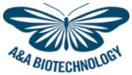

A&A Biotechnology in Italy
About A&A Biotechnology
A&A Biotechnology is a manufacturer specialised in molecular-biology reagents, with a broad range dedicated to nucleic-acid preparation and analysis.
What A&A Biotechnology makes
Kits for extraction and purification of gDNA, plasmid DNA, RNA and microRNA; reagents for reverse transcription, amplification (qPCR and PCR), modification and nucleic-acid electrophoresis. Products designed for high yields and consistent purity.
Application areas
Genotyping, gene expression, molecular diagnostics and sample preparation for sequencing. See Molecular biology and the Nucleic-acid extraction and PCR vs qPCR guides.
A&A Biotechnology with CABRU
CABRU represents A&A Biotechnology in Italy as a single point of contact: technical information, availability, quotation and order handling through to delivery.
Frequently asked questions
Who distributes A&A Biotechnology in Italy?
CABRU represents and distributes A&A Biotechnology in Italy.
How do I buy A&A Biotechnology kits?
Contact CABRU with your starting matrix and application: we identify the right kit and handle the order.
Does A&A Biotechnology cover RNA and microRNA extraction?
Yes, with dedicated RNA and microRNA kits alongside genomic and plasmid DNA.